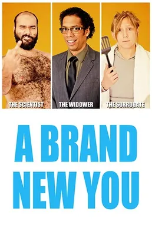

The genetics
Human cloning is the premise of this microbudget dark comedy. A grieving widower teams up with a disgraced cloning specialist, fired for illegal experiments, to clone his dead wife, with an indebted housemate as the paid surrogate. The geneticist is a comic, sympathetic loser rather than a villain, eager to prove himself again, and a rival scientist tries to sabotage him. Reviewers noted that the film treats the science and its consequences as secondary to its odd characters; Santiago, for instance, seems untroubled that a clone of his wife would be a baby, not the woman he lost, which is exactly what real cloning would produce: a later-born genetic twin, not a resurrection. The available source does not say whether the cloning succeeds, only that the scheme threatens to fall apart.
How genetics is portrayed
- Overall portrayal of genetics
- mixed The cloning scheme is absurd and its geneticist disgraced, yet the comedy treats both men sympathetically rather than as a warning.
- Outcome of the genetic intervention
- neutral The source reports the trio gathering equipment and a surrogate while a rival scientist undermines Murray and the scheme threatens to fall apart, but no notable result of the cloning itself.
- Murray
- ambivalent Aim: curiosity, personal (neutral). A geneticist fired for illegal cloning experiments, he seizes the chance to work again by helping Santiago clone his dead wife; the comedy presents him as a slobbish, sympathetic loser rather than a menace.
- Santiago Morales
- hero Aim: personal (neutral). The grieving widower instigates and pays for the plan to clone Viviana, with the indebted Laura as surrogate; the film invites the viewer to root for him despite the half-baked scheme.
The story
Santiago Morales, a former engineer, cannot get over the death of his wife Viviana from cancer. He rents a room in a house, watches videos of her on an iPad and builds a shrine to her in his bedroom, and his love of order clashes with his landlord and housemate Murray, a slob who spends his days in his underwear among the clutter. Santiago learns that Murray is a disgraced geneticist, once a rising star in cloning, who was fired for illegal experiments and is eager to get back to work. The two hatch a plan to clone Viviana, and their third housemate, Laura, who has lost her waitressing job and is in debt, reluctantly agrees to be the surrogate for a share of the money. The trio set about obtaining the equipment, while a rival scientist tries to undermine Murray, and the scheme threatens to fall apart.